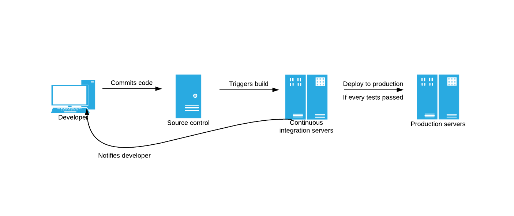

Some Good Points
by donaldyang
Main Points
任何前端开发遇到的问题都可以通过
封装
和
线下构建
来简化
封装：jQuery、Angular、Polymer
构建：Sass、Compass
封装 & 构建：React
预定大于配置，良好的约定可以极大得简化开发上手难度和构建难度
Outline
Continuous的三种阶段
本地开发服务器取代Fiddler开发模式
gulp插件复用与动态编译式开发
约定式构建
前端错误收集与快速定位
AST应用
Continuous的三种阶段
三种阶段
持续集成(Continuous integration)
持续交付(Continuous delivery)
持续部署(Continuous deployment)
持续集成(Continuous integration)
提早发现问题
避免集成地狱(Integration Hell)，简单的说就是避免将许多人代码集成到一起成为一个发行版本时产生错误时无法定位，互相怀疑对方代码有问题的情况
单元测试保证单元可靠，集成测试保证整体可靠，持续集成保证每次集成的粒度可控，出问题可查
持续交付(Continuous delivery)
将代码持续交付给QA团队，或用户，使得用户及早体验到产品，触发更短的迭代周期
持续部署(Continuous deployment)
更加极端的持续交付，当代码提交后，会自动触发自动化测试，当测试结束后自动部署，请见下图：
